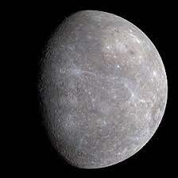
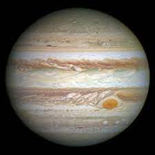
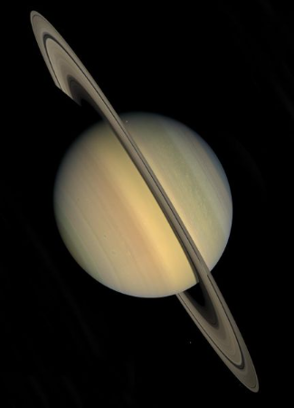
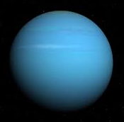
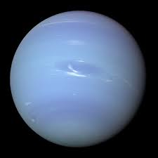

Diâmetro em Kms
Sol 1 392 000Mercúrio 4 880
Vénus 1 2104
Terra 1 2756
Marte 6 794
Júpiter 142 984
Saturno 120 536
Urano 51 118
Neptuno 49 572


Sistema Solar
| O Sistema Solar compreende o conjunto constituído pelo Sol e todos os corpos celestes que estão sob o seu domínio gravitacional. A estrela central, a maior componente do sistema (correspondendo a mais de 99% da sua massa), gera a sua energia através da fusão de hidrogênio em hélio, dois de seus principais constituintes. Os quatro planetas mais próximos do.Sol (Mercúrio, Vênus, Terra e Marte) possuem em comum uma crosta sólida,. e rochosa, razão pela qual se definem como o grupo dos planetas rochosos. Mais afastados, os quatro gigantes gasosos, Júpiter, Saturno, Urano e Neptuno, são os componentes de maior.massa do sistema logo após o próprio Sol.. |
|
|
| Planetas | |||
|---|---|---|---|
| Rochosos | Mercúrio  | Vénus |
Diâmetro em Kms Sol 1 392 000Mercúrio 4 880 Vénus 1 2104 Terra 1 2756 Marte 6 794 Júpiter 142 984 Saturno 120 536 Urano 51 118 Neptuno 49 572 |
| Terra |
Marte |
||
| Gasosos | Júpiter  | Saturno  | |
| Urano  | Neptuno  | ||
Duarte Rocha
11ºTGPSI